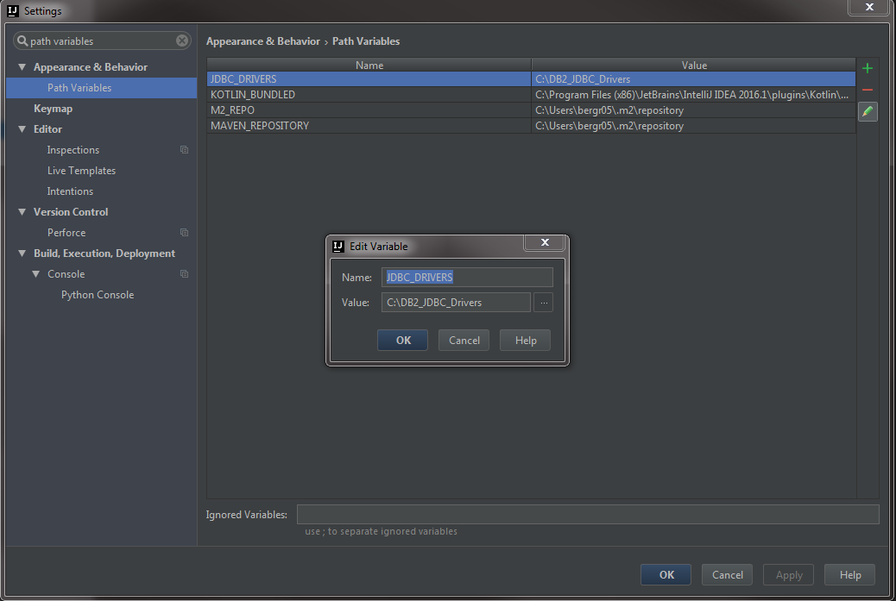

Build Instructions
Step 1: DB2 for z/OS JDBC Drivers
In order to build the rtpj-1.0-SNAPSHOT.jar, the following DB2 JDBC drivers must be present on the target system. If you do not have these drivers they are available with the free version of IBM Data Studio.
db2jcc_license_cisuz.jar
db2jcc4.jar
The drivers are also hosted on CA11 in the following USS directory: /u/users/db2mf20/jdbc
Once you have downloaded or located the .jar files, copy both files to a new folder or directory. The exact location does not matter only that they are the only two files located there. Take note of the chosen location as an environment variable will be created using that path in the next step.
Step 2: Set OS environment variables
Set the following environment variables. See How to set Environment Variables for additional help.
1.) JDBC_DRIVERS=[path to the above JDBC driver .jar files]
Important!: The directory of the JDBC_DRIVERS cannot have the type-2 db2jcc.jar file present in the directory or rtpj will fail to run properly.
2.) RTP_HOME=[path to the RTP project directory]
3.) MAVEN_HOME=[path to the maven directory] Intellij includes a copy of Maven, the path should be similar to:
C:\Program Files (x86)\JetBrains\IntelliJ IDEA 2016.1\plugins\maven\lib\maven3
4.) Modify the System PATH= variable to include the path to the Maven \bin directory. This should be similar to:
C:\Program Files (x86)\JetBrains\IntelliJ IDEA 2016.1\plugins\maven\lib\maven3\bin
5.) JAVA_HOME= [path to the jdk 1.7/1.8] i.e. (C:\Program Files\Java\jdk1.8.0_74)
6.) Validate the Maven and Java settings by issuing the following commands from OS command prompt:
Test Java Version: java -version
The output should be similar to:
java version "1.8.0_91"
Java(TM) SE Runtime Environment (build 1.8.0_91-b14)
Java HotSpot(TM) 64-Bit Server VM (build 25.91-b14, mixed mode)
Test Maven Version: mvn -version
The output should be similar to:
Apache Maven 3.0.4 (r1232337; 2012-01-17 02:44:56-0600)
Maven home: C:\Maven\apache-maven-3.0.4\bin\..
Java version: 1.7.0_03, vendor: Oracle Corporation
Java home: C:\Program Files\Java\jdk1.7.0_03\jre
Default locale: en_US, platform encoding: Cp1252
OS name: "windows 7", version: "6.1", arch: "amd64", family: "windows"
Step 3: Set Intellij environment variables
1.) Go to File -> Settings.
2.) In the search window type: Path Variables.
3.) Click the green "+" on the far right to add a new Path Variable to Intellij.
4.) Add a new variable named JDBC_DRIVERS, and set the value to the path of the DB2 for z/OS JDBC drivers.

Step 4: Build the Jar file
1.) Navigate to the /RTP/rtpj project directory.
2.) Execute the maven command from the OS command prompt:
mvn clean package
3.) After a successful build, the jar file will be located here: /RTP/rtpj/target/rtpj-1.0-SNAPSHOT.jar
See Running Tests for steps on executing tests.